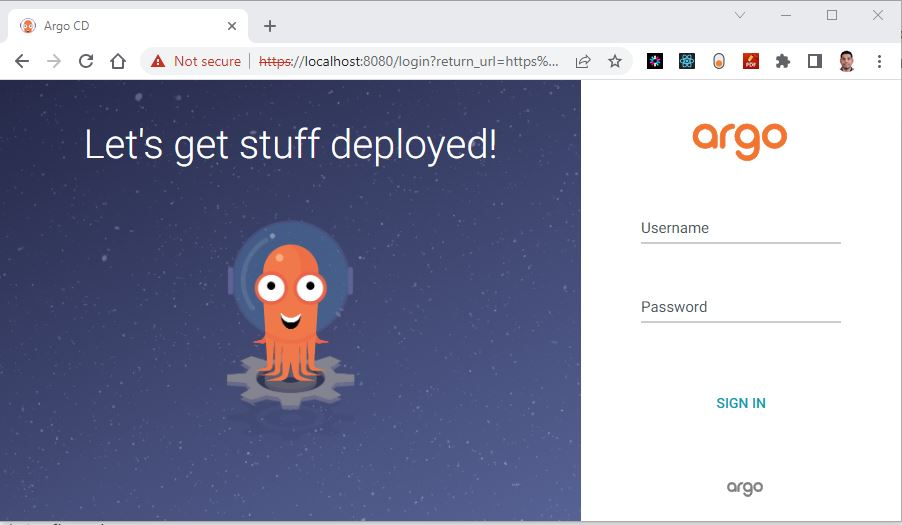
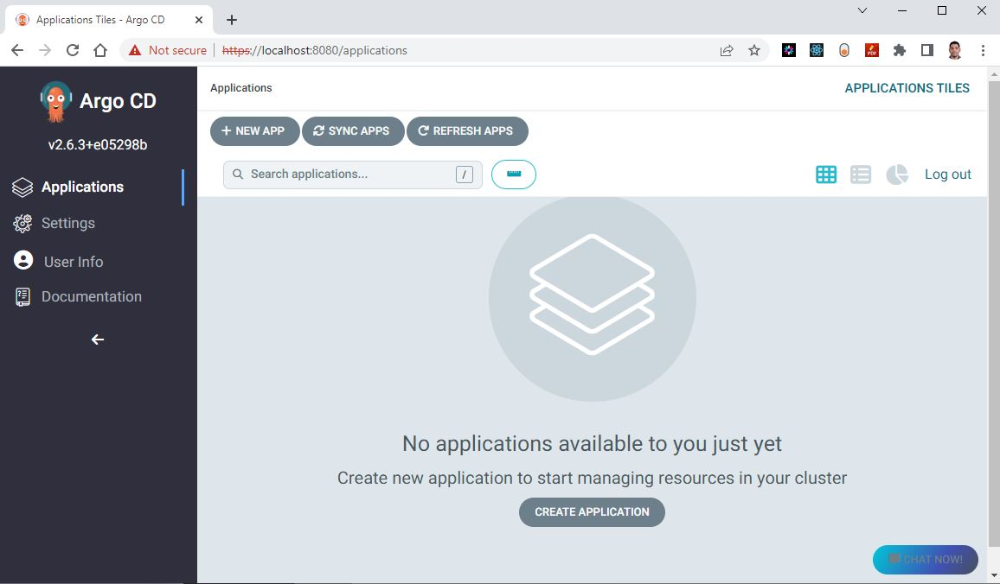
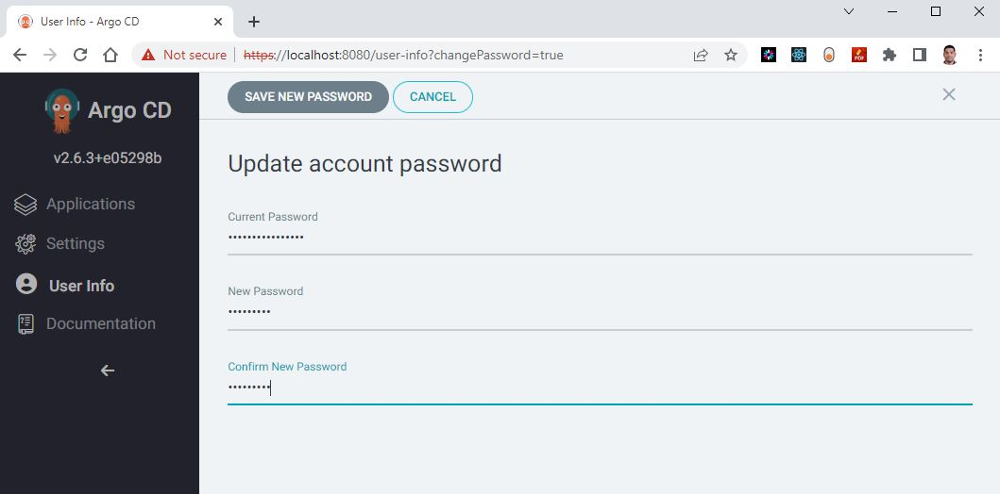

Install ArgoCD in AKS with helm chart using terraform
Introduction
Argo CD has two type of installations: multi-tenant and core.
-
Multi-tenant installation: A multi-tenant installation of Argo CD allows multiple teams or users to share the same Argo CD instance, while maintaining isolation and security. Each tenant has its own set of resources (such as applications, projects, and roles) that are separate from other tenants. This type of installation is suitable for larger organizations with multiple teams that require separate environments and permissions.
-
Core installation: A core installation of Argo CD is a simpler installation that is designed for a single team or user. It has a single set of resources (such as applications, projects, and roles) that are managed by the same user or team. This type of installation is suitable for smaller organizations or individuals who don't require the additional complexity of a multi-tenant setup.
Here we are going to use the Multi-tenant installation
Argo CD can be installed in two different ways in terms of High Availability (HA): Non-High Availability and High Availability.
- Non-High Availability installation: In this type of installation, Argo CD is installed on a single instance or node, which means that if that node fails or goes down, the entire system becomes unavailable. This type of installation is suitable for
development or testing environmentswhere high availability is not a critical requirement. - High Availability installation: In this type of installation, Argo CD is deployed across multiple instances or nodes, creating a redundant and fault-tolerant system that can withstand failures or outages. This type of installation is suitable for
production environmentswhere high availability and system uptime are critical requirements.
Here we are going to focus on Non-High Availability installation
Install ArgCDd using YAML manifest or helm charts?
Argo CD can be installed using either YAML manifests or Helm charts. Here we are going use Helm chart approach.
Helm simplifies the installation process and provides a more streamlined approach to installing Argo CD. Again we are going to install helm chart using terraform so that it is fully IaC automation. now let's take a look at the step by step approach for the Install ArgoCD in AKS with helm chart using terraform
Technical Scenario
As cloud engineer you have been asked to setup ArgoCD in the existing Kubernetes cluster so that you can use ArgoCD to deploy Microservice architecture manifests to a Kubernetes cluster so that ArgoCD will continuously monitor and reconcile the live environment with the desired state defined in Git.
Prerequisites
Once you have these prerequisites in place, you can proceed with the installation of Argo CD in AKS using terraform:
- Azure subscription - https://azure.microsoft.com/en-us/free/
- Install and configure Terraform (providers) - https://www.terraform.io/downloads
- helm provider
- Kubernetes provider
- Kubectl provider
- Install azure CLI - https://learn.microsoft.com/en-us/cli/azure/install-azure-cli
- Install and set up kubectl - https://kubernetes.io/docs/tasks/tools/install-kubectl-windows/
- A Kubernetes cluster: You need a running Kubernetes cluster to deploy ArgoCD.
- Git repository: You need a Git repository where your applications manifests are stored.
Implementation Details
In this exercise we will accomplish & learn how to implement following:
Step 1: Step-1: Configure Terraform providers
Step 2. Create a new namespace for ArgoCD
Step 3. Install ArgoCD in AKS with helm-chart using terraform
Step 4. Verify ArgoCD resources in AKS
Step 5. Configure port forwarding for login screen
Step 6. ArgoCD login with localhost
Architecture diagram
TBD
login to Azure
Verify that you are logged into the right Azure subscription before start anything in visual studio code
# Login to Azure
az login
# Shows current Azure subscription
az account show
# Lists all available Azure subscriptions
az account list
# Sets Azure subscription to desired subscription using ID
az account set -s "anji.keesari"
Connect to Cluster
# Azure Kubernetes Service Cluster User Role
az aks get-credentials -g "rg-aks-dev" -n "aks-cluster1-dev"
# Azure Kubernetes Service Cluster Admin Role
az aks get-credentials -g "rg-aks-dev" -n "aks-cluster1-dev" --admin
# get nodes
kubectl get no
kubectl get namespace -A
Step-1: Configure Terraform providers
Before installing any helm chart using Terraform in kubernetes, we need to make sure that Terraform providers are configured:
In one of our previous labs Setup NGINX ingress controller in Kubernetes cluster we've already configured Terraform providers therefore we are good here to start the next step.
Step-2: Create namespace for argocd
Create a separate namespace for argocd where all argocd related resources will be created. let's create a new file called argocd.tf and copy the following configuration.
run terraform validate & format
run terraform plan
output + create
Terraform will perform the following actions:
# kubernetes_namespace.argocd will be created
+ resource "kubernetes_namespace" "argocd" {
+ id = (known after apply)
+ metadata {
+ generation = (known after apply)
+ name = "argocd"
+ resource_version = (known after apply)
+ uid = (known after apply)
}
}
Plan: 1 to add, 0 to change, 0 to destroy.
Step-3: Install argocd in AKS with helm-chart using terraform
let's pick the office ArgoCD helm chart from ArtifactHUB website - https://artifacthub.io/packages/helm/argo/argo-cd
click on Install button and get following helm-chart details
# Install argocd helm chart using terraform
resource "helm_release" "argocd" {
name = "argocd"
repository = "https://argoproj.github.io/argo-helm"
chart = "argo-cd"
version = "5.24.1"
namespace = kubernetes_namespace.argocd.metadata.0.name
depends_on = [
kubernetes_namespace.argocd
]
}
Run terraform plan
terraform validate
terraform fmt
terraform plan -out=dev-plan -var-file="./environments/dev-variables.tfvars"
+ create
Terraform will perform the following actions:
.
.
.
Plan: 1 to add, 0 to change, 0 to destroy.
run terraform apply
helm_release.argocd: Creating...
helm_release.argocd: Still creating... [10s elapsed]
helm_release.argocd: Still creating... [20s elapsed]
helm_release.argocd: Still creating... [30s elapsed]
helm_release.argocd: Still creating... [40s elapsed]
helm_release.argocd: Still creating... [50s elapsed]
helm_release.argocd: Still creating... [1m0s elapsed]
helm_release.argocd: Creation complete after 1m5s [id=argocd]
Apply complete! Resources: 1 added, 0 changed, 0 destroyed.
Outputs
Step 4. Verify ArgoCD resources in AKS.
or
kubectl get namespace argocd
kubectl get deployments -n argocd
kubectl get pods -n argocd
kubectl get services -n argocd
NAME READY STATUS RESTARTS AGE
pod/argocd-application-controller-0 1/1 Running 0 2m21s
pod/argocd-applicationset-controller-848fc4dcfb-vp5rs 1/1 Running 0 2m21s
pod/argocd-dex-server-56888697cd-5vnlw 1/1 Running 0 2m21s
pod/argocd-notifications-controller-5cd6fc4886-p6wr4 1/1 Running 0 2m21s
pod/argocd-redis-b54b4ccd8-kdmdv 1/1 Running 0 2m21s
pod/argocd-repo-server-78998f9d78-xv64h 1/1 Running 0 2m21s
pod/argocd-server-c799cf854-9pnbw 1/1 Running 0 2m21s
NAME TYPE CLUSTER-IP EXTERNAL-IP PORT(S) AGE
service/argocd-applicationset-controller ClusterIP 10.25.250.229 <none> 7000/TCP 2m21s
service/argocd-dex-server ClusterIP 10.25.247.199 <none> 5556/TCP,5557/TCP 2m21s
service/argocd-redis ClusterIP 10.25.211.159 <none> 6379/TCP 2m21s
service/argocd-repo-server ClusterIP 10.25.233.23 <none> 8081/TCP 2m21s
service/argocd-server ClusterIP 10.25.115.123 <none> 80/TCP,443/TCP 2m21s
NAME READY UP-TO-DATE AVAILABLE AGE
deployment.apps/argocd-applicationset-controller 1/1 1 1 2m21s
deployment.apps/argocd-dex-server 1/1 1 1 2m21s
deployment.apps/argocd-notifications-controller 1/1 1 1 2m21s
deployment.apps/argocd-redis 1/1 1 1 2m21s
deployment.apps/argocd-repo-server 1/1 1 1 2m21s
deployment.apps/argocd-server 1/1 1 1 2m21s
NAME DESIRED CURRENT READY AGE
replicaset.apps/argocd-applicationset-controller-848fc4dcfb 1 1 1 2m21s
replicaset.apps/argocd-dex-server-56888697cd 1 1 1 2m21s
replicaset.apps/argocd-notifications-controller-5cd6fc4886 1 1 1 2m21s
replicaset.apps/argocd-redis-b54b4ccd8 1 1 1 2m21s
replicaset.apps/argocd-repo-server-78998f9d78 1 1 1 2m21s
replicaset.apps/argocd-server-c799cf854 1 1 1 2m21s
NAME READY AGE
statefulset.apps/argocd-application-controller 1/1 2m21s
kubectl get configmaps -n argocd
NAME DATA AGE
argocd-cm 6 3m6s
argocd-cmd-params-cm 29 3m6s
argocd-gpg-keys-cm 0 3m6s
argocd-notifications-cm 1 3m6s
argocd-rbac-cm 3 3m6s
argocd-ssh-known-hosts-cm 1 3m6s
argocd-tls-certs-cm 0 3m6s
kube-root-ca.crt 1 11m
kubectl get secrets -n argocd
NAME TYPE DATA AGE
argocd-initial-admin-secret Opaque 1 3m7s
argocd-notifications-secret Opaque 0 3m23s
argocd-secret Opaque 5 3m23s
sh.helm.release.v1.argocd.v1 helm.sh/release.v1 1 3m24s
kubectl get ingress -n argocd
output
Step-5. port forwarding for login screen
To perform local login testing for Argo CD, you can use port forwarding. Here are the steps:
- Connect to your AKS cluster using kubectl
- Forward the Argo CD server port to your local machine: output
- Access the Argo CD web interface by visiting https://localhost:8080 in your web browser.
Note:Use this URL for before patching - https://localhost:8080 Use this URL for after patching - http://localhost:8080/
Note: The port forwarding can be stopped by cancelling the command with CTRL + C.
Step-6. ArgoCD login with localhost
how to get argocd-initial-admin-secret?
The default username is admin and the password is auto generated and stored as clear text. You can retrieve this password using the following command:
PowerShell
kubectl get secret -n argocd argocd-initial-admin-secret -o json | ConvertFrom-Json | select -ExpandProperty data | % { $_.PSObject.Properties | % { $_.password + [System.Text.Encoding]::UTF8.GetString([System.Convert]::FromBase64String($_.Value)) } }
kubectl -n argocd get secret argocd-initial-admin-secret -o jsonpath="{.data.password}" | base64 -d; echo
Username - default argocd username is admin Password - get default argocd password from aks-> configuration->secrets-> argocd-initial-admin-secret
once you are able to successfully login into ArgoCD you will see the following screen.
Change the password
To change the password in Argo CD, you can login to argocd portal -> user Info -> Update Password.
Note- If your password is saved in the Azure Key vault then keep this password same as Key Vault.

Change the password using Kubectl
- Connect to the Argo CD server using kubectl:
- Change the password for the admin user: